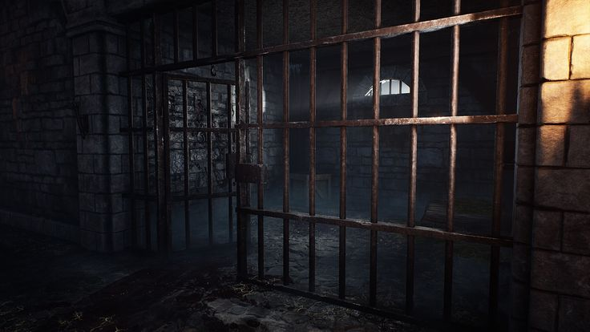

Am Ende des Schachts, deien Vermutung ist, es war ein alter Lüftungsschacht, führt in einen düsteren Raum. Er ist nur durch den sanften schein einer einzelnen Laterne in ein sanftes goldenes Licht gehüllt. Du springst aus der Öffnung und findest dich in einer alten Zelle wieder. Du bist umgeben fon drei Wänden und einer Gittertür. Der Schacht ist zu hoch um in aus dem Stand zu erreichen also näherst du dich dem Gittertor und merkst, dass es nicht verschlossen ist. Du gehst hindurch und kannst den Flur entweder nach rechts oder nach liks gehen.
Auf der linken seite siehst du in einiger Distanz eine weitere Treppe die nah unten führt, auf deiner rechten siehst du eine Holztür mit eisernen Beschlägen.